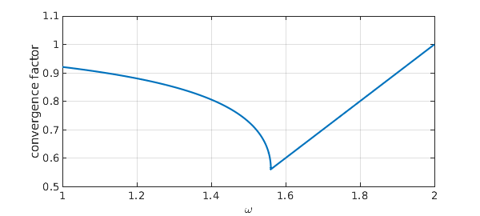

The classic finite-difference 1D Laplacian discretization looks like this:
N = 11; A = toeplitz([2 -1 zeros(1,N-3)])
A =
2 -1 0 0 0 0 0 0 0 0
-1 2 -1 0 0 0 0 0 0 0
0 -1 2 -1 0 0 0 0 0 0
0 0 -1 2 -1 0 0 0 0 0
0 0 0 -1 2 -1 0 0 0 0
0 0 0 0 -1 2 -1 0 0 0
0 0 0 0 0 -1 2 -1 0 0
0 0 0 0 0 0 -1 2 -1 0
0 0 0 0 0 0 0 -1 2 -1
0 0 0 0 0 0 0 0 -1 2
We may split $A$ into its lower-triangular, diagonal, and upper-triangular parts:
L = tril(A,-1); D = diag(diag(A)); U = triu(A,1);
From the beginning of the computer era, people studied solution of matrix problems with this kind of matrix by the method of successive overrelaxation or SOR. Here $\omega\in [1,2]$ is the overrelaxation parameter, and we iterate with the matrix defined like this: $$ G = M^{-1} N, \qquad M = D + \omega L, \quad N = (1-\omega)D- \omega U. $$ In MATLAB, that's
G = @(om) (D+om*L)\((1-om)*D-om*U); rho = @(om) max(abs(eig(G(om))));
Analysis of the SOR iteration was carried out by Frankel [1] and generalized by Young [4]; see also [3]. Details are given in innumerable books, such as Golub and Van Loan [2]. Supposing we didn't know the theory, Chebfun would give us an elegant way to draw the famous optimal-$\omega$ curve:
f = chebfun(rho,[1 2],'splitting','on','vectorize');
plot(f,'linewidth',2), grid on
xlabel('\omega','fontsize',16)
ylabel('convergence factor')

Chebfun gives us the following optimal omega:
[rho_opt,omega_opt] = min(f)
rho_opt = 0.560387921274781 omega_opt = 1.560387921274774
Here are the exact optimal values:
omega_exact = 2/(1+sin(pi/N)) rho_exact = omega_exact - 1
omega_exact = 1.560387921274774 rho_exact = 0.560387921274774
References
-
S. Frankel, Convergence rates of iterative treatments of partial differential equations, Mathematics of Computation 4 (1950), 56-75.
-
G. H. Golub and C. F. Van Loan, Matrix Computations, 4th ed., Johns Hopkins, 2012.
-
R. J. LeVeque and L. N. Trefethen, Fourier analysis of the SOR iteration, IMA Journal of Numerical Analysis, 8 (1988), 273-279.
-
D. M. Young, Iterative Methods for Solving Partial Difference Equations of Elliptic Type, PhD thesis, Harvard U., 1950.